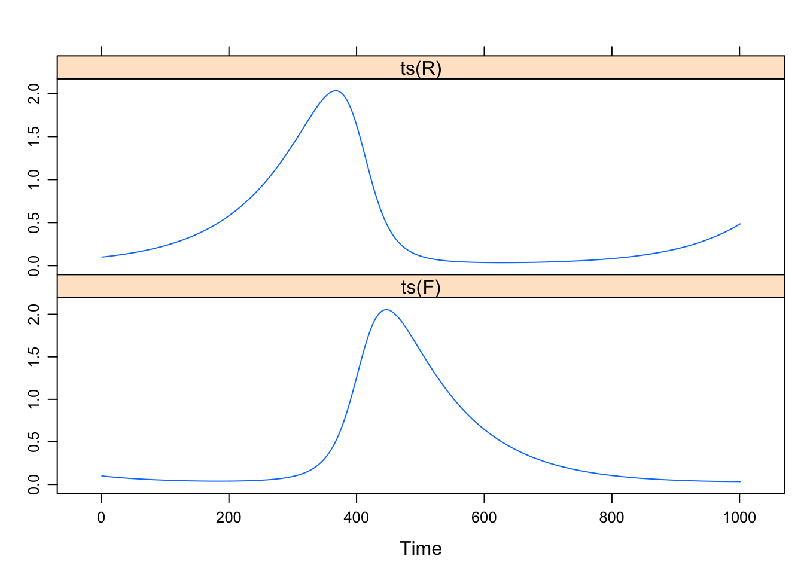
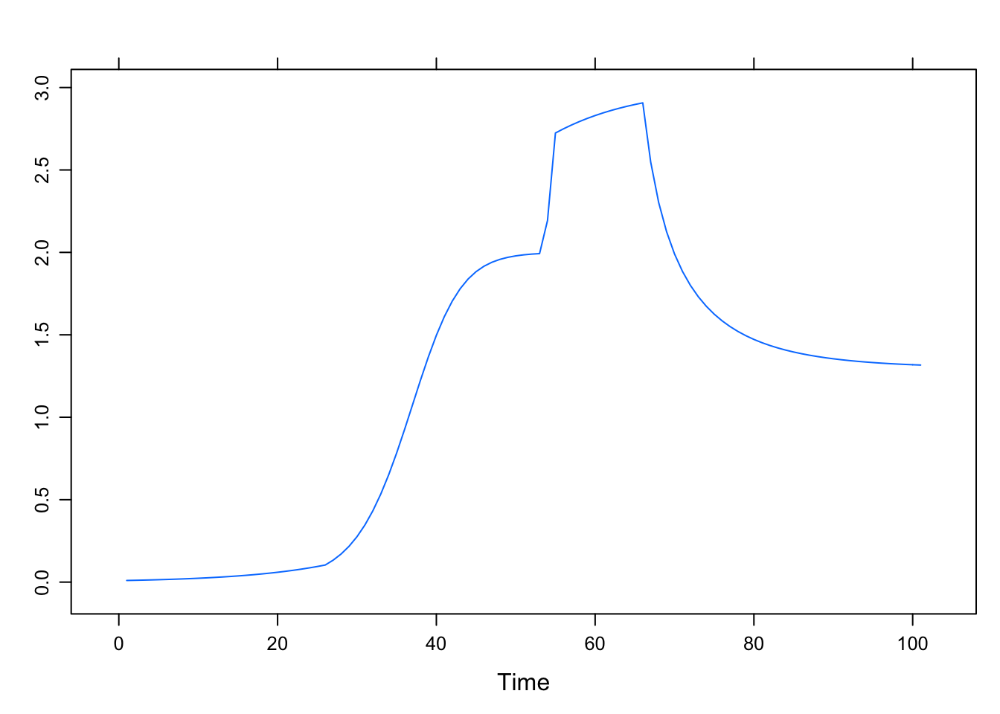

B.2 Predator-prey dynamics
Iterating 2D Maps and Flows
In order to ‘solve’ a differential equation for time using a method of numerical integration, one could code it like in the spreadsheet assignment. For R and Matlab there are so-called solvers available, functions that will do the integration for you. Look at the Examples in package deSolve.
Solutions in a spreadsheet
B.2.1 Solutions in R
Euler’s method and more…
The result of applying a method of numerical integration is called a numerical solution of the differential equation. The analytical solution is the equation which will give you a value of \(Y\) for any point in time, given an initial value \(Y_0\). Systems which have an analytical solution can be used to test the accuracy of numerical solutions.
Remember that the analytical solution for the logistic equation is:
\[\begin{equation} \frac{K}{1 + \left(\frac{K}{Y_0 - 1}\right) * e^{-r*t} } \tag{B.1} \end{equation}\]We have the function growth.ac() and could easily adapt all the functions to use Euler’s method.
Below is a comparison of the analytic solution with Euler’s method.
# Parameter settings
d <- 1
N <- 100
r <- .1
k <- 1
Y0 <- 0.01
Y <- as.numeric(c(Y0, rep(NA,N-1)))
# Numerical integration of the logistic differential equation
Y.euler1 <- ts( sapply(seq_along(Y), function(t) Y[[t+1]] <<- (r * Y[t] * (k - Y[t])) * d + Y[t] ))
Y.euler2 <- ts( sapply(seq_along(Y), function(t) Y[[t+1]] <<- (r * Y[t] * (k - Y[t])) * (d+.1) + Y[t] ))
## analytical solution
Y.analytic <- ts( k / (1 + (k / Y0 - 1) * exp(-r*(time(Y.euler1)))) )
ts.plot(Y.analytic, Y.euler1, Y.euler2,
gpars = list(xlab = "time (a.u.)",
ylab = expression(Y(t)),
main = expression(paste("Analytic vs. Numerical:",Y[t+1]==Y[t]*(1 + r - r*Y[t]))),
lwd = rep(2,3),
lty = c(1:3),
col = c("darkred","darkblue","darkgreen")
)
)
legend(50, 0.4, c("Analytic",
"Euler: delta = 1.0",
"Euler: delta = 1.1"),
lwd = rep(2,3), lty = c(1:3), col = c("darkred","darkblue","darkgreen"), merge = TRUE)
Numerical integration
The Euler setup:
\[\begin{align} R_{t+1} &= f_R(R_t,Ft) * \Delta + R_t \\ F_{t+1} &= f_F(R_t,F_t) * \Delta + F_t \end{align}\]With the equations:
\[\begin{align} R_{t+1} &= (a-b*F_t)*R_t * \Delta + R_t \\ \\ F_{t+1} &= (c*R_t-d)*F_t * \Delta + F_t \end{align}\]# Parameters
N <- 1000
a <- d <- 1
b <- c <- 2
R0 <- F0 <- 0.1
R <- as.numeric(c(R0, rep(NA,N-1)))
F <- as.numeric(c(F0, rep(NA,N-1)))
# Time constant
delta <- 0.01
# Numerical integration of the logistic differential equation
l_ply(seq_along(R), function(t){
R[[t+1]] <<- (a - b * F[t]) * R[t] * delta + R[t]
F[[t+1]] <<- (c * R[t] - d) * F[t] * delta + F[t]
})
# Note different behaviour when ts() is applied
xyplot(cbind(ts(R),ts(F)))
xyplot(R ~ F, pch = 16)